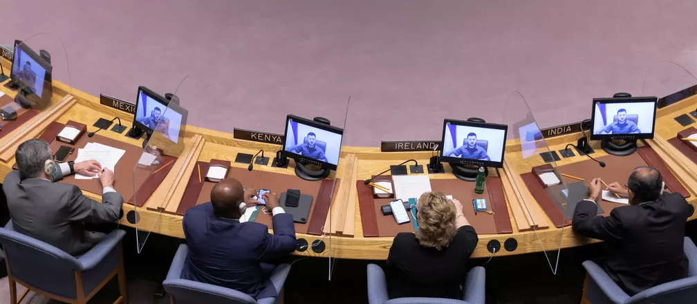

Zelensky pede garantias de proteção no Conselho de Segurança da ONU
Citando a carta da ONU, o presidente da Ucrânia afirmou que a Rússia havia violado o principal artigo da organização.

Zelensky fala ao Conselho de Segurança da ONU nesta terça-feira (5) — Foto: Andrew Kelly/Reuters
O presidente ucraniano, Volodymyr Zelensky, discursou para o Conselho de Segurança da ONU nesta terça-feira (5) e pediu ao países membros que dessem mais garantias de segurança à Ucrânia.
"Onde está a segurança que o Conselho de Segurança precisa garantir? Não está lá. Embora haja um Conselho de Segurança. Então, onde está a paz? Quais são essas garantias que as Nações Unidas precisam assegurar?", questionou Zelensky.
Ao conversar com os estados membros por meio de um tradutor, o presidente ucraniano afirmou que a Rússia é amplamente responsável pelos danos da guerra.
Zelensky fala ao Conselho de Segurança da ONU nesta terça-feira (5) — Foto: Andrew Kelly/Reuters
"Gostaria de lembrá-los do Artigo 1, Capítulo 1 da Carta da ONU. Qual é o propósito de nossa organização? Seu propósito é manter a paz", disse ele. "E agora a Carta da ONU foi violada literalmente, começando com o Artigo 1. Qual é o sentido de todos os outros artigos?"
Ao chamar as ações russas de "crimes de guerra", Zelensky pediu investigações completas e transparentes.
"Acesso máximo para jornalistas, cooperação máxima com instituições internacionais, envolvimento do Tribunal Penal Internacional - responsabilidade completa e total. Tenho certeza de que todos os estados membros da ONU devem estar interessados nisso", pediu o presidente.
Zelensky ainda pediu para que qualquer russo que tenha dado "ordens criminais" seja julgado nos mesmos moldes de generais nazistas em Nuremberg, logo após o fim da segunda guerra mundial.
"Eles vão dizer que são várias versões, versões diferentes, é impossível estabelecer qual dessas versões é verdadeira. Eles vão até dizer que os corpos foram supostamente jogados fora e todos os vídeos são encenados, mas agora é 2022, eu tenho provas conclusivas", falou Zelensky.
Após listar uma série de atrocidades que as tropas russas teriam feito com os civis em Bucha, o presidente ucraniano os comparou a grupos terroristas e questionou ao Conselho qual a diferença entre os radicais e os russos?
Zelensky ainda apertou o cerco à organização quanto a medidas sobre a Rússia.
"Se não há nada que vocês podem fazer além de conversas, dissolvam a organização", disse ele.